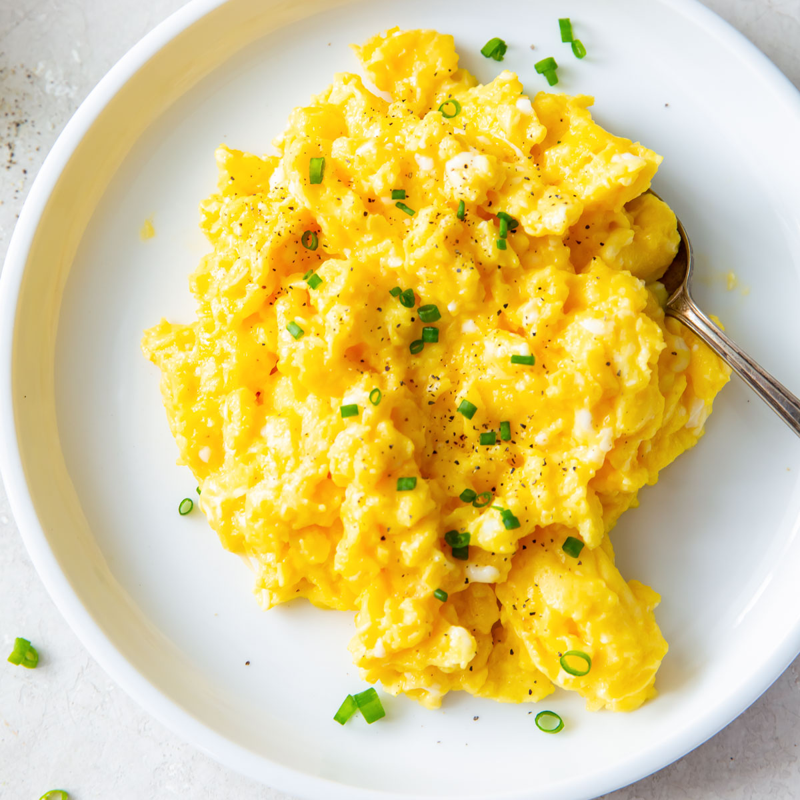

Scrambled Eggs

How to make the best scrambled eggs
Ingredients
- Eggs
- Butter
- Salt, Pepper
- optional: Green Onion
Steps
- Put your pan at medium heat
- Add the butter
- Add 2-3 eggs
- With a wooden spatula keep moving the eggs
- Take off the heat once u have ur desired consistency